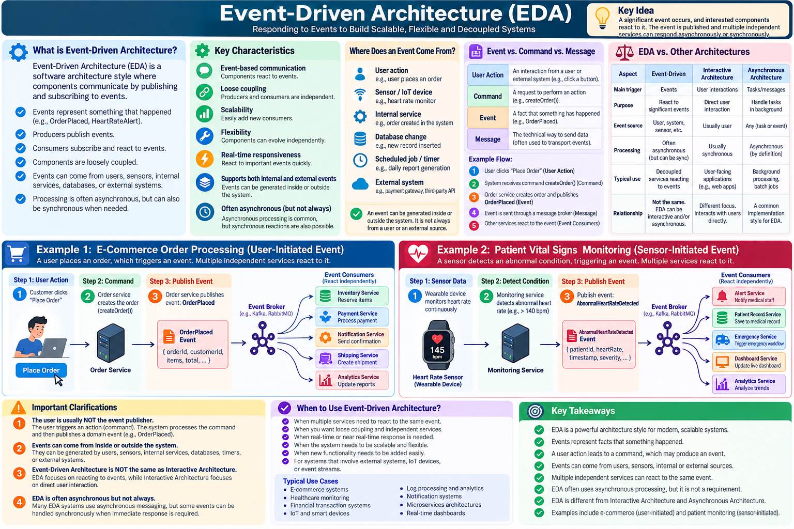

Event-Driven & Transformational Architectures
Two very different behaviors need two very different organizing structures: react to events versus transform input into output.
Event-Driven Architecture (EDA)
In an event-driven architecture, a producer publishes a fact about something that has happened, and interested consumers react to it. The event may originate from a user-initiated workflow, a sensor, an internal service, a timer, or an external system. Asynchronous messaging is common, but it is not required in every event-driven design.

In an online store, clicking Place Order initiates a command; the Order Service may then publish OrderPlaced. Independent consumers, such as inventory and notification services, respond to that event. A patient-monitoring system illustrates the same pattern when a sensor reading causes the monitoring service to publish AbnormalHeartRateDetected.
Transformational Architecture
Transformational architecture organizes processing as a sequence of transformations: each stage takes input data, applies a defined operation, and passes the result to the next stage. It is especially useful for predictable data-processing workflows.
Raw student marks → Validate records → Calculate weighted grades → Assign letter grades → Generate grade report
Key distinction: EDA is organized around events and reactions; transformational architecture is organized around data and processing stages. A real system can combine both—for example, an event triggers a grade-processing pipeline.